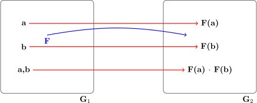

In this section, we introduce fundamental concepts necessary for understanding homomorphisms.
[herstein1975topics] A set is a collection of distinct elements. It is usually represented as \( A = \{a_1, a_2, \dots , a_n\} \). Two sets are equal if they contain the same elements.
A function \( f: A \to B \) is a mapping that assigns each element of set \( A \) to exactly one element of set \( B \). The set \( A \) is called the domain, and \( B \) is the codomain.
A function \( f: A \to B \) is called one-one or injective if for every \( a_1, a_2 \in A \), whenever \( f(a_1) = f(a_2) \), it follows that \( a_1 = a_2 \). In other words, different elements in the domain map to different elements in the codomain.
A function \( f: A \to B \) is called onto or surjective if for every element \( b \in B \), there exists at least one element \( a \in A \) such that \( f(a) = b \). This means that the function covers the entire codomain.
[dummit2004abstract] A homomorphism is a structure-preserving map between two algebraic structures. Formally, if \( (G, *) \) and \( (H, \cdot ) \) are groups, a function \( \phi : G \to H \) is a homomorphism if for all \( a, b \in G \),
This property ensures that the operation is preserved under the mapping.
A function is defined in preliminaries, right? But here we will dive deep into why a function is invoked in mathematics. The following observations may not be the way historically functions have been invoked in mathematics. But the following observations are rather based on visualization of equivalence of mathematical structures, which will help us understand how peculiar definitions of different functions between different mathematical models are brought into action. Without further discussion, let us dive into our discussion:
Suppose we have two sets A and B. We say \(A=B\) iff \(A\subseteq B\) and \(B\subseteq A\). But suppose \(A\neq B\), then is there any comment we can make about them?
Imagine \(A = \{a, b, c, d\}\) and \(B = \{e, f, g, h\}\). However, if \(a \neq e\), \(b \neq f\), and so on, it seems that A and B can overlap. That is, if we place set A on top of set B, they will match at the points \(a \rightarrow e\), \(b \rightarrow f\), and so forth. They can be thought of as nodes or ends of threads when stitching two pieces of clothing, A and B. Look at the following images:
This diagram represents a function mapping elements from \( A \) to \( B \), demonstrating their structured correspondence.
In the above diagram what we see is the prototype for a bijective function. So, we need function to connect a node of \(A\) with thread to a node of \(B\). If the connection is unique we say the function is 1-1. And from the other side i.e. from \(B\) to \(A\) if the same unique connection happens we say this thing to be onto-ness of \(f\). Actually we want B also to connect A from each of B’s node so, for each element(node) of B we have a element in A that we can connect with thread and this property actually called onto-ness in actual manner. But as f is 1-1 from A to B together with onto-ness it is easy to see that the oposite functon from B to A also becomes 1-1 as each of B point is connected to some point of A by onto-ness and this point of A must be unique otherwise connection from A to B will not be unique.
The discussion above gives us overview of why a function is needed and what a bijective function should be by natural choice. So, a connection bewteen \(f:A\rightarrow B\) be bijective function if it follows the folowing properties:
If we see from the other side also for verification finally that no nodes of B left out stitching with nodes of A. otherwise proper overlapping will not work. i.e. \(\forall y \in B \exists x\in A\) s.t. \(f(x)=y\), i.e. \(x\) is stitched to \(y\). if this condition fails we say A in embedded into B, i.e. A is equivalent to a subset of B given that above two conditions are satisfied. and we write, \(A\cong f(A)\subseteq B\)
What is group, it is nothing but a set along with a extra structure which is the operation of the group. So, our aim is to get some conditions like above to identify when we say two group are equivalent. As, group are first of all sets so, the underlying sets must be equivalent so, there must be a bijective function in between them say, \(F:(G_1,*_1)\rightarrow (G_2,*_2)\).

So, notice the two elements \(a\) and \(b\) are tied to a third element \(a*_1b\) always ie given these two elements we always get a third element \(a*_1b\). This is the extra structure that a normal set lacks. So, we need to overlap that structure also. So, given \(a,b\in G_1\) we have \(F(a),F(b)\in B\) connected by thread ie overlapped already set theoretically now, we have \(a*_1b\in G_1\) and corresponding \(F(a)*_2F(b)\in G_2\). So, we need to overlap these elements too. That is these two elemets should be connected by a thread to overlap the final structure i.e. we need
And hence we need these extra condition also you guys might argue that why not we are checking these above condition from \(G_2 \rightarrow G_1\) but that will be satisfied automatically like the \(B \rightarrow A\) 1-1 ness was statisfied automatically in case of set theoritical point of view. Similarly, here it is easy to verify \(F^{-1}\) also satisfy equation (1).
I am Atrajit Sarkar, currently doing Phd on Analysis from IISER PUNE, INDIA. My experties are in analysis and pure mathematics,coding and technology. You can check out the following sites about myself: